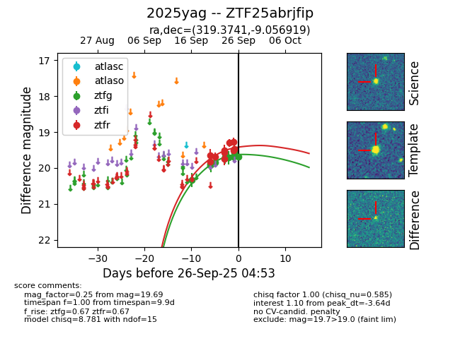
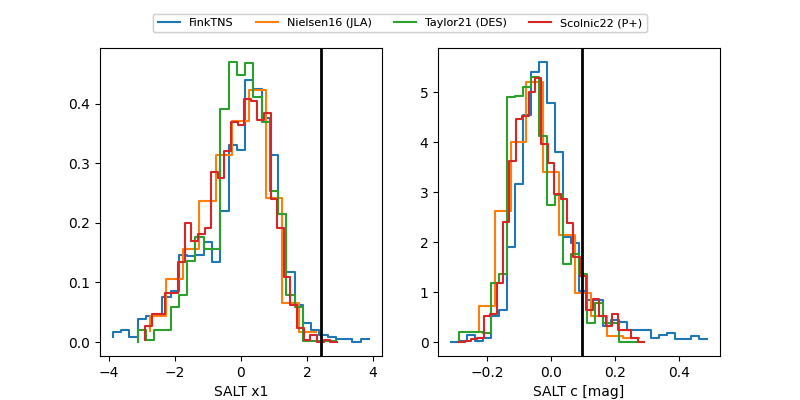

FINK: ZTF25abrjfip
Lasair: ZTF25abrjfip
ALeRCE: ZTF25abrjfip
TNS: 2025yag
YSE: 2025yag
ZTF25abrjfip (ztf,fink)
2025yag (tns,yse)
equatorial (ra, dec) = (319.3741,-9.05692)
galactic (l, b) = (42.0822,-36.49443)


last ztfg=19.69, ztfr=19.46
10 ztfg, 10 ztfr detections